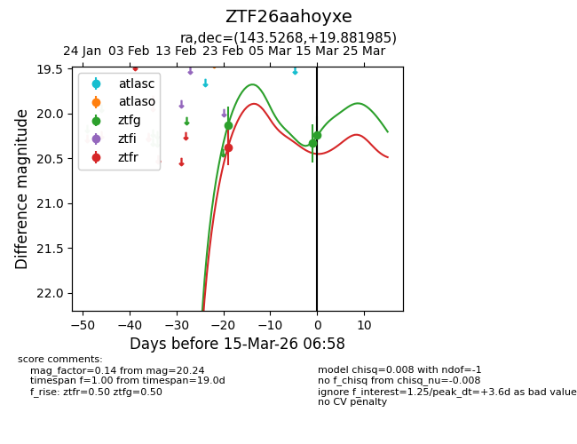
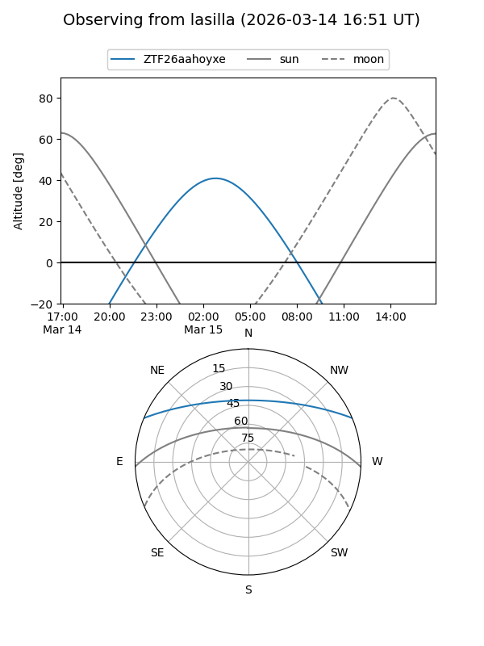
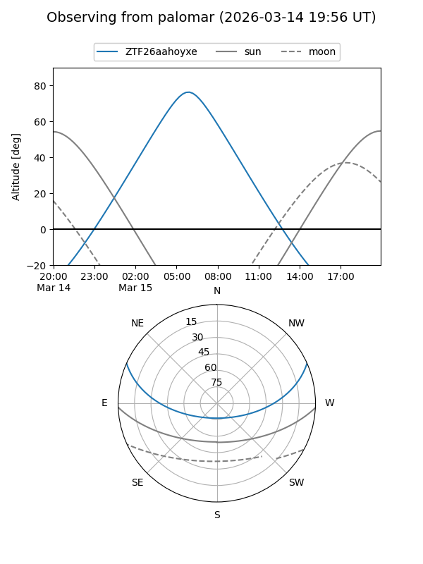
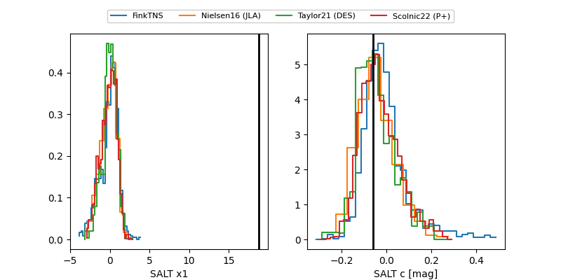

ZTF26aahoyxe
Target ZTF26aahoyxe at 2026-03-15 07:00
Aliases and brokers:
FINK: link
Lasair: link
ALeRCE: link
alt names
ZTF26aahoyxe (ztf,fink_ztf)
Coordinates:
equatorial (ra, dec) = 143.5268,+19.88199
equatorial (HMS+DMS) = 09:34:06.43,+19:52:55.15
galactic (l, b) = (211.0664,+44.46538)
Flags:
Photometry:
last ztfg=20.24, ztfr=20.38
3 ztfg, 1 ztfr detections
Lightcurve

Visibility


Additional plots
